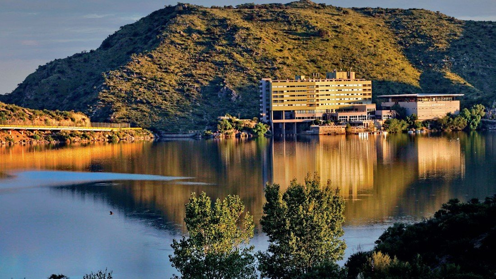

Lugares que visitar en la provincia
Merlo San Luis

Villa de Merlo San Luis : La ciudad de Merlo se encuentra ubicada en el extremo NE de la provincia de San Luis, esta alegre y colorida Villa Serrana te espera durante los 365 días del año para que pases unas vacaciones inolvidables. Reconocida mundialmente por su benigno microclima y sus hermosos paisajes y entornos naturales, Merlo cuenta con una moderna y confortable infraestructura de alojamiento y servicios.
Potrero de los Funes San Luis
Potrero de los Funes es uno de los más aclamados destinos turísticos de la provincia, está ubicado en un encantador valle a 960 msnm, rodeado por cerros que forman parte de las últimas estribaciones de las Sierras de San Luis. Conquista con su sereno espejo de agua, que es el dique más antiguo de la provincia. Traspasando el acogedor pueblo, encontrarás quebradas, saltos de agua y arroyos que descienden entre sierras y que pueden visitarse en sus cómodas costaneras o en caminatas por senderos, acompañado por guías.
Nogoli San Luis

Es una localidad del Departamento Belgrano, de la provincia de San Luis, Argentina.Se encuentra 49 km al norte de la ciudad de San Luis, a orillas del Río Nogolí que nace en las Sierras de San Luis.Pequeño paraíso terrenal recostado sobre la falda occidental de las sierras, Nogolí se ubica en el centro- norte de la provincia de San Luis brindando sin reservas su belleza natural y su serenidad característica. Bañada por aguas claras que la hacen merecedora de su denominación indígena, ha sido recientemente descubierta por el turismo convirtiéndose así en un destino magnético para quien busca descanso y recreación en un marco de extrema hermosura.